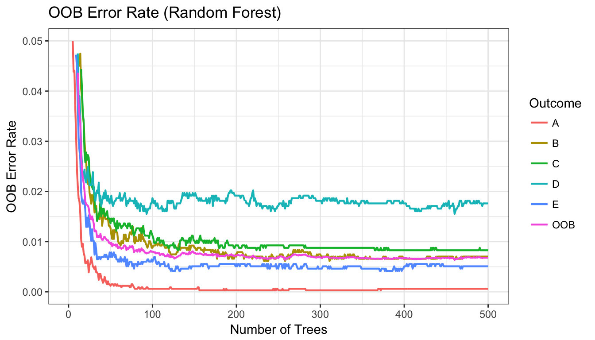

Machine Learning on Accelerometer Data
Reynaldo
5/9/2017
Summary
This analysis uses different machine learning algorithms on accelerometer data to predict the way individuals perform weight-lifting exercises. The dataset comes from Veloso et al., (2013) and it contains data from accelerometers on the belt, forearm, arm, and dumbbell from 6 individuals.
The individuals were asked to perform one set of 10 repetitions of the unilateral dumbbell biceps curl in five different ways: (A) correctly; (B) throwing the elbows to the front; (C) lifting the dumbbell only halfway; (D) lowering the dumbbell only halfway; and (E) throwing the hips to the front.
The following analysis tests different machine learning algorithms, including CART, Random Forest, and Boosted (GBM) to predict the way dumbbell biceps curls were performed. The best performing algorithm is a Random Forest specification with \(99.3\%\) accuracy, followed by a Boosted GBM with \(94.3\%\) accuracy, in the test dataset.
- Necessary packages
library(caret); library(dplyr); library(knitr); library(pander)
library(rpart); library(rpart.plot); library(gbm)
library(randomForest); library(ggRandomForests); library(corrplot)Data Processing
The training dataset is available here. And the test dataset is available here.
- Data
test <- read.csv("pml-testing.csv")
train <- read.csv("pml-training.csv")
names(train)
str(train)The original dataset contains \(19622\) observations of \(160\) variables. Preliminary analysis found: (a) a large number of variables with near zero variability; (b) the first columns contain recording and identification data irrelevant to the prediction; and (c) a significant number of variables with less than \(10\%\) of valid observations. The variables with these characteristics are thus discarded.
- Discard variables
a. discard variables with near zero variance
b. discard variables irrelevant to prediction (remaining columns 1-6).
c. discard variables with 80% NAs or more
nrzv <- nearZeroVar(train)
train <- train[,-nrzv]
train <- train[, -c(1:6)]
xNAs <- which(colMeans(is.na(train)) > .8)
train <- train[, -xNAs]Dataset Split
Data is then split into a training dataset with 60% of instances for model training, and a testing dataset with the remaining 40% of instances.
- Split data for training and testing
set.seed(400)
inTrain = createDataPartition(train$classe, p = 3/5)[[1]]
training = train[ inTrain,]
testing = train[-inTrain,]Pre-processing
The training dataset now contains \(11776\) observations of \(53\) variables, all cells with valid entries. Although correlation analysis shows a high correlation between a number of predictors (as seen in the visualization in the appendix), no further manual pre-processing will be performed for the remaining of the analysis. As a note, PCA decomposition (discarded in this report) was able to capture \(95\%\) of the variability by reducing the number of components by over \(50\%\), but accuracy was significantly compromised, while expediency gains were only minor. Because of the nature of decision trees (i.e. they can branch at equivalent splitting points) scaling or translational normalization is not necessary. Furthermore, they are also robust to correlated variates.
Machine Learning Specifications
The following will test and compare the performance of 3 different machine learning algorithms: CART, Random Forest, and GBM.
- First Model: Classification and Regression Tree (CART)
tm.1 <- system.time(
rpart1 <- rpart(classe ~ ., method="class", data=training))
testrpart <- predict(rpart1, newdata = testing[,-length(testing)], type = "class")
cm1 <- confusionMatrix(testrpart, testing$classe)- Second Model: Random Forest (RF)
tm.2 <- system.time(
rfm <- randomForest(training[,-length(training)], training[,length(training)], ntree = 500))
testrfm <- predict(rfm, newdata = testing[,-length(testing)])
cm2 <- confusionMatrix(testrfm, testing$classe)- Third Model: Boosting (GBM)
tm.3 <- system.time(
gbm1 <- gbm.fit(x = training[,-length(training)], y = training[,length(training)],
distribution = "multinomial", verbose = FALSE,
interaction.depth=5, shrinkage=0.005, n.trees = 1000))
best.iter <- gbm.perf(gbm1,method="OOB", plot.it = FALSE)
probs <- predict(gbm1, testing[,-length(testing)], n.trees = best.iter, type = "response")
indexes <- apply(probs, 1, which.max)
testgbm <- colnames(probs)[indexes]
cm3 <- confusionMatrix(testgbm, testing$classe)Algorithm Performance Comparison
The following are some extractions from the Confusion Matrix output for each specification. These calculations were done on the test dataset (except time elapsed) and should be an unbiased estimate of out of sample performance.
- Performance Comparison
Accuracy <- as.numeric(c(cm1$overall[1], cm2$overall[1], cm3$overall[1]))
Kappa <- as.numeric(c(cm1$overall[2], cm2$overall[2], cm3$overall[2]))
OOBError <- 1 - Accuracy
Time.Elapsed <- as.numeric(c(tm.1[3], tm.2[3], tm.3[3]))
Results <- rbind(Accuracy, Kappa, OOBError, Time.Elapsed)
colnames(Results) <- c("CART", "Random Forest", "GBM")The calculated Accuracy rates, Kappas, and Out-of-Sample Error rates estimates for each specification are:
|
Performance metrics indicate that the Random Forest is the best performing algorithm tested here for this purpose with an accuracy rate of \(0.993245\). It is followed by the GBM algorithm with an accuracy rate of \(0.9434107\). And last, is the CART algorithm which performed poorly compared to the other two with an accuracy rate of \(0.7243181\). In terms of time efficiency, the Random Forest specification is about 7 times faster than GBM.
The following reports the Confusion Matrices for the two best performing algorithms in terms of accuracy. Class Specific statistics are for the Random Forest model only.
| A | B | C | D | E | |
|---|---|---|---|---|---|
| A | 2175 | 75 | 0 | 3 | 12 |
| B | 30 | 1384 | 60 | 12 | 29 |
| C | 10 | 55 | 1279 | 57 | 27 |
| D | 13 | 3 | 24 | 1208 | 18 |
| E | 4 | 1 | 5 | 6 | 1356 |
| A | B | C | D | E | |
|---|---|---|---|---|---|
| A | 2231 | 8 | 0 | 0 | 0 |
| B | 1 | 1504 | 20 | 0 | 0 |
| C | 0 | 6 | 1346 | 12 | 3 |
| D | 0 | 0 | 2 | 1274 | 0 |
| E | 0 | 0 | 0 | 0 | 1439 |
|
Predicting on the test Dataset
Now I will use the two best performing algorithms to predict how well individuals perform the dumbbell exercises using the test dataset for submission.
- Transforming the test dataset in the same way as training. Then using the Random Forest model for prediction
test <- test[,-nrzv]
test <- test[, -c(1:6)]
test <- test[, -xNAs]
test <- test[,-length(test)]
testRF <- predict(rfm, newdata = test)- Using the GBM model for prediction. Compare predictions
probs2 <- predict(gbm1, test, n.trees = best.iter, type = "response")
indexes2 <- apply(probs2, 1, which.max)
testGBM <- as.factor(colnames(probs2)[indexes2])
answers <- cbind.data.frame(testRF, testGBM)
colnames(answers) <- c("Random Forest:", "Boosted (GBM)")
identical(answers[,1], answers[,2])## [1] TRUEThe RF and the GBM predictions are identical. The answers to be submitted are:
|
Conclusion:
This analysis used accelerometer data to predict how well individuals perform dumbbell-lifting exercises. Three machine-learning algorithms were tested: CART, Random Forest, and GBM. The best performing algorithm was the Random Forest with \(99.3\%\) accuracy, followed by the GBM with \(94.3\%\) accuracy, and worst performing was the CART algorithm, which performed poorly compared to the other two with a \(72.4\%\) accuracy.
Appendix
Fig 1. Correlation matrix visualization
par(xpd=TRUE)
corrplot.mixed(cor(training[,-length(training)]), lower="color", upper="circle", mar=c(1,1,1,1),
tl.pos="lt", diag="n", title = "Correlation Matrix Visualization",
order="hclust", hclust.method="complete", tl.cex = .65, tl.col ="#656565")
Fig 2. Rpart decision tree
rpart.plot(rpart1, main="Decision Tree (rpart)", type = 1, extra=0, cex = NULL,
tweak = 1, fallen.leaves = FALSE, shadow.col = "#e0e0e0", box.palette = mycolors)
Fig 3. Random Forest oob error rate
plot(gg_error(rfm)) + theme_bw() + scale_y_continuous(limits=c(0,.05)) + ggtitle("OOB Error Rate (Random Forest)") + geom_line(size=.75)
Fig 4. Variables of importance (Random Forest)
vimp <- varImp(rfm); vimp <- cbind(measure = rownames(vimp), vimp)
vimp <- arrange(vimp, desc(Overall))
vimp$measure <- factor(vimp$measure, levels = vimp$measure)
ggplot(vimp[1:12,], aes(measure, Overall)) + theme_bw() +
geom_bar(stat = "identity", fill = "#ff4d94", alpha = 0.8) +
theme(axis.text.x = element_text(angle = 30, hjust = 1)) +
xlab("Measure") +
ggtitle("Top 12 Variables of Importance (Random Forest)")Fig 5. Variables of importance (GBM)
vimp2 <- head(summary(gbm1, plotit = FALSE), 12)
vimp2$var <- factor(vimp2$var, levels = vimp2$var)
ggplot(vimp2, aes(var, rel.inf)) + theme_bw() +
geom_bar(stat = "identity", fill = "#b366ff", alpha = 0.8) +
theme(axis.text.x = element_text(angle = 30, hjust = 1)) +
xlab("Measure") +
ggtitle("Top 12 Variables of Importance (GBM)")Reference:
Velloso, E.; Bulling, A.; Gellersen, H.; Ugulino, W.; Fuks, H. (2013) Qualitative Activity Recognition of Weight Lifting Exercises. Proceedings of 4th International Conference in Cooperation with SIGCHI (Augmented Human ’13) . Stuttgart, Germany: ACM SIGCHI